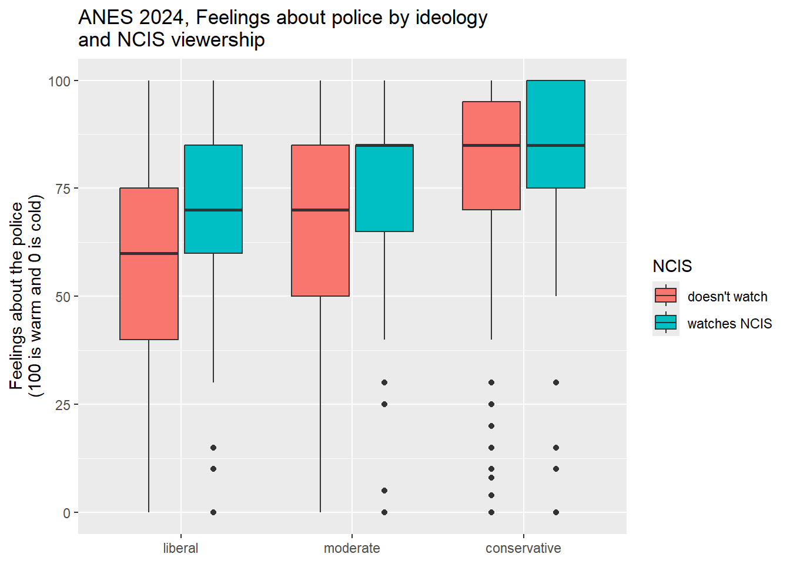

Chapter 6 Making inferences from sample means
6.1 Getting started with this chapter
To get started in today’s chapter, open the project that you made in lab 1. If you forgot how to do this, see the instructions in section 2.2.
Now, open a new script file and save it in your scripts folder as “chapter 6 practice.” Copy and paste this onto the page (updating the text so that it is about you):
####################################
# Your name
# 20093 Chapter 6, Practice exercises
# Date started : Date last modified
####################################
#libraries------------------------------------------
library(tidyverse)
library(Hmisc) #the cut2 command helps us simplify interval variables
library(scales) #this is useful when the labels on our axes overlapNow select all the text on this page, run it, and save it.
6.2 Constructing a confidence interval around a mean
The fundamental task of much statistical analysis is to make mathematically informed inferences about populations from samples. We can see this most clearly when looking at data like the ANES, which is a sample of Americans from which we want to make inferences about all Americans. But even when looking at our states or world dataset, in which our dataframe includes data about all states and (almost) all countries in the world, it is still helpful to think about making inferences about populations. In this case, we might think of the population as states or countries that we cannot observe because they are hypothetical, they have not yet come into existence (because they are in the future) or they existed in the past. In other words, we are studying our group of states and countries to make inferences about hypothetical states and countries, states and countries in the future, states and countries in the past, or state and countries that we cannot observe for some other reason.
One inference that we often want to make about a population is the mean of some variable. Given the mean that we observe in sample, what is the range of outcomes for the population mean that we might reasonably expect to observe?
This is the formula for the confidence interval around a mean:
\[CI = \bar{x} ± t_{critical}{\frac{s}{\sqrt{n}}}\]
The critical value for t will vary with the sample size. “S” is the sample standard deviation, and “n” is the sample size. You might recall from class that \[{\frac{s}{\sqrt{n}}}\] is the standard error of the sample mean.
Let’s imagine that we want to estimate the mean feeling thermometer value for Americans’ view of the Centers for Disease Control and Prevention (the CDC). First we can ask R to calculate the mean of our sample, using the mean() command that we learned in Chapter 3. If we were to enter mean(anes2020$ft_cdc), we would get NA” as our output, because there are some cases with missing data. To address this, we must ask R to remove the NAs for the purposes of this operation with “na.rm=TRUE”, like this:
mean(anes2020$ft_cdc, na.rm=TRUE)## [1] 70.19634This tells us that the mean of our sample is 70.19634. Or, in other words, the average person in our sample gives the CDC a 70.2 on a feeling thermometer with possible values ranging from 0-100. Based on this, what can we say about the population mean? To answer this question, we can ask R to construct a confidence interval around this mean, with this command:
t.test(ft_cdc~1, data=anes2020)##
## One Sample t-test
##
## data: ft_cdc
## t = 253.43, df = 7272, p-value < 2.2e-16
## alternative hypothesis: true mean is not equal to 0
## 95 percent confidence interval:
## 69.65338 70.73931
## sample estimates:
## mean of x
## 70.19634Before we look at the output, let’s look at the command. We are asking R to construct a t-test of the mean of only one variable (which explains the ~1), and we are telling R to find that variable in the anes2020 dataframe.
Looking at the output, after the title, “One Sample t-test” the next three lines are not particularly useful. The fourth and fifh lines, however, are quite helpful. They tell us that the 95% confidence interval that we can put around our sample mean goes from 69.7 to 70.7. In other words, there is a 95% chance that the true population mean feeling thermometer when this survey was taken was somewhere between 69.7 and 70.7. If we wanted to be even more confident than 95%–say, for example, we wanted to be 99% confident that our interval contains the population mean—-we could include a line in our command setting the confidence interval like this:
t.test(ft_cdc~1, data=anes2020, conf.level=.99)##
## One Sample t-test
##
## data: ft_cdc
## t = 253.43, df = 7272, p-value < 2.2e-16
## alternative hypothesis: true mean is not equal to 0
## 99 percent confidence interval:
## 69.48270 70.90999
## sample estimates:
## mean of x
## 70.19634When you run this command, notice that if we want to be more confident that our interval contains the true population mean, the margin between our lower and upper estimate gets larger. Similarly, if we set the confidence interval to 90%, or 80%, the interval gets smaller.
6.3 Constructing a confidence interval around a proportion
For nominal and ordinal variables, it does not make sense to calculate a mean, but we still often want to make inferences about a population from a sample. In fact, these are one of the most commonly reported kinds of inferences that we who follow politics hear: 54.2% of people support this policy, 32.1% of people support that politician, etc. To ask R to calculate a confidence interval around a proportion, we first need two pieces of information: how many cases got the value that we are interested in, and how many cases are there total. So, for example, let’s say that we want to use our anes2020 dataset to estimate the proportion of Americans that are married. We can first run the table command, like this:
table(anes2020$marital)##
## divorced married never married separated widowed
## 1221 4322 1951 163 567When we run this command, we see that there are 4,322 married people in our sample. Unfortunately, the table command itself does not tell us the total number of cases in our sample, but to get that, we can ask R to sum all the values that it shows in the table command like this:
sum(table(anes2020$marital))## [1] 8224When we run this command, we get the total number of cases for which R has data on the marital question: 8,224. This is the sum of all of the numbers that we saw above, when we ran the table() command. Since the table() command automatically excludes the NAs, this sum also excludes NAs.
So, now we know that there were 4,322 married people in our dataset out of the 8,224 people for whom we have data. We could do have R do some simple math and calculate a proportion by entering 4332/8224 into the Console. The output tells us that 0.526751—about 52.7%—of individuals in our sample are married. Based on this finding about our sample, what can we say about our population? To help us generalize, we can use those two numbers (4,332 married people out of 8,224 total people) along with the prop.test() command to help generate a confidence interval around that proportion.
When using the prop.test() command, in the parenthesis we first put the number of cases with the value that we are interested in, then a comma, then the total number of cases. So, to estimate the proportion of Americans that are married, we would use prop.test() like this:
prop.test(4332,8224)##
## 1-sample proportions test with continuity correction
##
## data: 4332 out of 8224
## X-squared = 23.434, df = 1, p-value = 1.293e-06
## alternative hypothesis: true p is not equal to 0.5
## 95 percent confidence interval:
## 0.5158893 0.5375875
## sample estimates:
## p
## 0.526751Just like the output from the t-test, the first few lines are testing a hypothesis that we are likely not interested in. In this case, the default is to test the hypothesis that the population proportion is actually .5. If you want to set that hypothesis to a different value, you can add p=the value you are interested in after a comma. So, for example, if you had a hypothesis that 70% of Americans are married, you could test that hypothesis with this command:
prop.test(4332,8224, p=.7)But the most important part of this output begins with the fourth line. This shows that the 95% confidence interval around the estimate that the proportion of Americans that are married goes from .5158893 to .5375875. Or, put another way, based on our sample, we can infer that 95% of the time, a sample like ours would be drawn from a population where between 51.6% and 53.8% of the population was married.
If we want to change the values of our confidence interval, to be 99% confident (or 90% confident, or 80% confident), we can add a comma and then conf.level= and then the level that we are interested in, expressed as a proportion. So, for example, if we wanted to be 99% confident that our interval contains the true population proportion, we could alter the command like this:
prop.test(4332,8224, conf.level=.99)Note that the interval gets wider as the confidence level goes up.
6.4 Constructing confidence intervals around several proportions at once
In the previous section, we learned how to construct a confidence interval around a single proportion at a time. However, what if we want to calculate confidence intervals around all values of a nominal or ordinal variable at the same time? To do that, you can use the following code. Just replace anes2020 with the dataframe that you are interested in analyzing, and replace the two instances of marital (in the second and third lines of the code) with the name of the variable that you are interested in. You can keep everything else the same:
anes2020 %>%
filter(!is.na(marital)) %>%
group_by(marital) %>%
summarise(group.n=n()) %>%
mutate(total.n=sum(group.n)) %>%
mutate(proportion=group.n/total.n) %>%
rowwise() %>%
mutate(lower_ci = prop.test(group.n, total.n, conf.level=0.95)$conf.int[1]) %>%
mutate(upper_ci = prop.test(group.n, total.n, conf.level=0.95)$conf.int[2]) ## # A tibble: 5 x 6
## # Rowwise:
## marital group.n total.n proportion lower_ci upper_ci
## <chr> <int> <int> <dbl> <dbl> <dbl>
## 1 divorced 1221 8224 0.148 0.141 0.156
## 2 married 4322 8224 0.526 0.515 0.536
## 3 never married 1951 8224 0.237 0.228 0.247
## 4 separated 163 8224 0.0198 0.0170 0.0231
## 5 widowed 567 8224 0.0689 0.0636 0.0747Reading down this output, we can see that a proportion of .148 (or 14.8%) of our sample is divorced. The next two columns tell us that there is a 95% chance that the true population proportion of divorced people is between 14.1% and 15.6%. We can see the married values on the second line, with a familiar confidence interval, and each additional line clearly displays the confidence interval around the proportion that we are interested in. And as we continue to read down, we can see the remaining proportions with their associated confidence intervals.
6.5 T-test of independent means
We often find ourselves in a situation where we want to compare the means of two different groups in our sample, and make inferences about the population. So, for example, we might want to compare men and women, Democrats and Republicans, voters and non-voters, etc. For the purposes of this example, we will be comparing democracies and non-democracies in our world dataframe. Before we can start with this comparison, though, we have to do a bit of housekeeping. The democracy variable that we have in the world dataframe is an interval variable, with values ranging from 14.3 (a value shared by countries including Equatorial Guinea, Eritrea, North Korea, and Saudi Arabia) to 100 (a value shared by Andorra, Australia, the Bahamas, Canada, and the United States).
To generate an ordinal variable to measure democracies, partial democracies, and non-democracies, we can use the cut2 command like this:
world$democ3<-cut2(world$fh_democ, g=3)When we run this command, we get a new ordinal variable in the world dataframe that has three levels. To see what those levels are named, we can use the levels command, like this:
levels(world$democ3)## [1] "[14.3, 57.1)" "[57.1, 92.8)" "[92.8,100.0]"We can rename those levels to more intuitive names like this:
levels(world$democ3)<-c("non-democracy","partial democracy","democracy")The question that I want to address is whether democracies have more economic equality than non-democracies. The conventional measure of economic equality is the GINI coefficient, which ranges from 0 (total equality) to 100 (total inequality). Using the commands that we learned in chapter 4, we can first examine what the mean differences are between democracies, partial democracies, and non-democracies on their GINI coefficient, with this command:
world %>%
filter(!is.na(democ3)) %>%
filter(!is.na(UNDP_Gini2014)) %>%
group_by(democ3) %>%
summarise(mean=mean(UNDP_Gini2014), sd=sd(UNDP_Gini2014), n=n())## # A tibble: 3 x 4
## democ3 mean sd n
## <fct> <dbl> <dbl> <int>
## 1 non-democracy 38.8 6.77 51
## 2 partial democracy 43.8 10.3 53
## 3 democracy 37.2 9.25 32This output suggests that the most equal societies are democracies, followed by non-democracies, with partial democracies being the least equal of all. Are these differences due to random sampling error, or do they reflect a population-level difference between democracies and non-democracies? In other words, are these differences statistically significant?
Before conducting a significance test, it is important to specify our null and research hypotheses. In this case, our null hypothesis is that there is no relationship between regime type and level of equality, and our research hypothesis is that democracies have more equality than non-democracies. To test our hypotheses, we can use the same t.test() command from above, but we have to give it more information first. Here is the command that we can use:
t.test(UNDP_Gini2014 ~ democ3, data=world %>%
filter(democ3=="democracy"|democ3=="non-democracy"))##
## Welch Two Sample t-test
##
## data: UNDP_Gini2014 by democ3
## t = 0.8757, df = 51.746, p-value = 0.3852
## alternative hypothesis: true difference in means between group non-democracy and group democracy is not equal to 0
## 95 percent confidence interval:
## -2.137422 5.446797
## sample estimates:
## mean in group non-democracy mean in group democracy
## 38.82000 37.16531Notice how the first thing in the parentheses after t.test is the dependent variable (i.e. the variable that we are calculating the mean of), followed by a ~ and then our independent variable (democ3). One thing that is a little tricky is that R does not like to do a t-test when the independent variable has more than two values. To address this, I have used the dplyr filter command to set it so that I am only looking at cases of democ2 coded “democracy” or “non-democracy” (i.e. I am filtering out the NAs and partial democracies). The “|” between the two conditions (it is the character above the “" on your keyboard) means”or.”
Now take a look at the output. There are a few things to note here. First of all, we could see that the reported p-value is .3852. That tells us that, if we accept the research hypothesis that democracies have more equality than non-democracies, there is a probability of .3852, or a 38.5% chance, that we are making Type I error (rejecting a true null hypothesis). Since the critical value for p is generally set to .05 (meaning we are not willing to take more than a 5% risk of Type I error), we would fail to reject the null hypothesis.
We can also see that we would fail to reject the null hypothesis by looking at the confidence interval that R reports. Since this is a t-test of two samples, the confidence interval is actually of the difference between the two means. In other words, that confidence interval is telling us that there is a 95% chance that the true population difference in GINI coefficient between democracies and non-democracies is between -2.14 and 5.45. Since that interval includes 0, we cannot rule out the possibility that there is no difference at all between our two means in the population.
We can also graph these results. As usual, we will put our independent variable (regime type) on the X-axis, and our dependent variable, GINI score, on the Y axis. For today’s new feature, we will also add 95% confidence intervals to our graph. This gives us the ability to see whether the differences between all of the bars on our graph are statistically significant. And, while an independent samples t-test can only be between the means of two groups at a time, this graph will let you look at more than two groups at a time. Below is the code:
plotting.data<-world %>%
filter(!is.na(democ3)) %>%
filter(!is.na(UNDP_Gini2014)) %>%
group_by(democ3) %>%
summarise(
n=n(),
mean=mean(UNDP_Gini2014),
sd=sd(UNDP_Gini2014)) %>%
mutate(se=sd/sqrt(n)) %>%
mutate(ci=se * qt((1-0.05)/2 + .5, n-1))
ggplot(plotting.data) +
geom_bar(aes(x=democ3, y=mean), stat="identity", fill="purple", alpha=0.5) +
geom_errorbar( aes(x=democ3, ymin=mean-ci, ymax=mean+ci), width=0.4, colour="black", alpha=0.9, size=1.5) +
ggtitle("Equality in democracies and non-democracies",
subtitle="Error bars represent 95% confidence intervals")+
xlab(NULL)+
ylab("Gini coefficient in 2014 (lower numbers mean more equality)")Here we can see the overlapping 95% confidence intervals on each bar, reminding us that the difference that we observe is not statistically significant.
6.6 T-test of independent proportions
There are times when we want to compare two or more proportions to examine whether or not the differences are due to random sampling error or some genuine correlation at the population level. Unfortunately, R does not make it easy to run a t-test comparing two proportions. However, we can use dplyr in a way similar to what we did in section 6.3 to generate some helpful output. Before we begin, we have to know three things:
- What is the nominal or ordinal independent variable that we are interested in examining?
- What is the nominal or ordinal dependent variable that we are interested in examining?
- For our dependent variable, what is the value that we want to focus on?
For the following example, I am interested in the relationship between whether or not a voter thought that the 2020 government response to COVID was appropriate or not and whether or not the person voted for Trump in the 2020 election. To generate a table that displays that information, I will use the following code. Please note that this is very similar to the code that we used in section (ci-around-proportions). When using this code to generate your own table, you can replace anes2020 with the dataframe that you want to look at, “v2020” with your dependent variable, “covid” with your independent variable, and v2020==“Donald Trump” with:
DV=="the value that you are interested in"Here is the code:
anes2020 %>%
filter(!is.na(v2020)) %>%
filter(!is.na(covid)) %>%
group_by(covid) %>%
summarise(
n=n(),
numerat=sum(v2020=="Donald Trump")) %>%
mutate(proportion=numerat/n) %>%
rowwise() %>%
mutate(lower_ci = prop.test(numerat, n, conf.level=0.95)$conf.int[1]) %>%
rowwise() %>%
mutate(upper_ci = prop.test(numerat, n, conf.level=0.95)$conf.int[2])## # A tibble: 5 x 6
## # Rowwise:
## covid n numerat proportion lower_ci upper_ci
## <ord> <int> <int> <dbl> <dbl> <dbl>
## 1 Much too quick 93 63 0.677 0.571 0.769
## 2 Somewhat too quick 63 56 0.889 0.778 0.950
## 3 About right 1888 1720 0.911 0.897 0.923
## 4 Somewhat too slow 595 325 0.546 0.505 0.587
## 5 Much too slow 3169 286 0.0902 0.0806 0.101This output has a bunch of great information. The first row, “much too quick”, for example, tells us that a total of 93 people in the ANES study in 2020 thought that the government’s COVID response moved much too quick. And of those 93, the second number tells us that 63 of them voted for President Trump. The third number tells us that 67.7% of people that thought that the government’s response was much too quick voted for President Trump. The lower_ci and upper_ci columns tell us that there is a 95% chance that the true population proportion of Trump voters who thought that the COVID response was much too quick is between .571 (or 57.1%) and .769 (or 76.9%). If we read down the rows, we will see that some of the confidence intervals overlap with one another. When these confidence intervals overlap, we can say that the differences are not statistically significant (or that we cannot rule out the chance that the differences that we observed are due to random sampling error). So, for example, the confidence interval between the proportion of Trump votes that thought that the government’s COVID response was somewhat too quick and the proportion that thought that it was about right overlap. The upper limit of the somewhat too quick interval is .95, which is higher than the lower limit of the about right interval (.897). This is easier to see on a graph. We can generate a graph with code similar to what we used in section (t-test-ind-means):
plotting.data<-anes2020 %>%
filter(!is.na(v2020)) %>%
filter(!is.na(covid)) %>%
group_by(covid) %>%
summarise(
n=n(),
numerat=sum(v2020=="Donald Trump")) %>%
mutate(proportion=numerat/n) %>%
rowwise() %>%
mutate(lower_ci = prop.test(numerat, n, conf.level=0.95)$conf.int[1]) %>%
rowwise() %>%
mutate(upper_ci = prop.test(numerat, n, conf.level=0.95)$conf.int[2])
ggplot(plotting.data) +
geom_bar(aes(x=covid, y=proportion), stat="identity", fill="purple", alpha=0.5) +
geom_errorbar(aes(x=covid, ymin=lower_ci, ymax=upper_ci), width=0.4, colour="black", alpha=0.9, size=1.5) +
ggtitle("Assessment of Gov't covid response and proportion voting for Trump, ANES 2020",
subtitle="Error bars represent 95% confidence intervals")+
xlab(NULL)+
ylab("Proportion voting for Trump")
This graph shows us that most of the differences between these bars are statistically significant. In other words, people’s assessment of the government’s response to COVID in 2020 does seem to be pretty strongly correlated with whether or not they voted for President Trump.
Now when looking at this graph, we might be tempted to observe that it certainly seems like the vast majority of our sample voted for President Trump. After all, more than 50% of respondents in every category, from “much too quick” to “somewhat too slow” voted for President Trump. In only the final category, “much too slow,” were Trump voters a minority. What is going on here?
To get a clue, we can look at those bars around the 95% confidence intervals. Notice that the narrowest interval is around “much too slow.” This is because that was, by far, the biggest group of people that we surveyed, which means that our estimate can be more precise (and thus the bars can be closer together). To see that even more clearly, let’s take another look at that table that we generated above:
## # A tibble: 5 x 6
## # Rowwise:
## covid n numerat proportion lower_ci upper_ci
## <ord> <int> <int> <dbl> <dbl> <dbl>
## 1 Much too quick 93 63 0.677 0.571 0.769
## 2 Somewhat too quick 63 56 0.889 0.778 0.950
## 3 About right 1888 1720 0.911 0.897 0.923
## 4 Somewhat too slow 595 325 0.546 0.505 0.587
## 5 Much too slow 3169 286 0.0902 0.0806 0.101The last row tells us that there were 3,169 people who thought that the government’s response to COVID was much too slow. This is much, much larger than any of the other groups. So, when interpreting these kinds of graphs, we want to be careful not to make interferences that aren’t warranted by the graph. The graph does indeed show us that people that approved of the government’s handling of COVID in 2020 were more likely to vote for President Trump, but it does NOT show us that there were more Trump voters in 2020. If you want to know the proportion of our sample that voted for Trump with a 95% confidence interval, you can use table(anes2020$v2020), sum(table(anes2020$v2020)), and prop.test() to calculate it.
6.7 Review of this chapter’s commands
| Command | Purpose | Library |
|---|---|---|
| t.test() | To calculate a t-test. With a one sample test, you put the variable that we are interested in ~1, and then a comma, and then data=“your dataframe.” For an an independent samples t-test, you put DV~IV in the parenthesis, and then a comma, and then data= “your dataframe”. | Base R |
| t.test(…, mu=?) | A t-test of a single sample is testing the hypothesis that the population mean of the variable you are testing is 0. If you want to test another hypothesis (for example, that the average TCU student has a 17 purple shirts), you can set mu to be the number that you are hypothesizing. | Base R |
| t.test(…, conf.level=?) | The default confidence interval for a t-test is .95. If you want to set it to something else, you can do it with the conf.level command. | Base R |
| sum(table()) | This command adds up all of the values in a frequency table. It is useful when calculating proportions. | Base R |
| prop.test() | This command calculates a confidence interval around a proportion. You must give R two numbers. The number of your cases with the value that you are interested in, followed by a comma, and then the total number of cases that you have data on for that variable (which you can calculate with sum(table()). For example, if you had a sample with 500 people and 200 said that bagels were their favorite baked good, you would write prop,test(200,500) to get a confidence interval around the proportion of people that like bagels best. | Base R |
| prop.test(…, p=?) | The default hypothesis for an estimate of a population proportion is that the proportion is .5 (or 50%). If you want to change that, you can type p=and then the proportion that you are hypothesizing about. | Base R |
| prop.test(…, conf.level=?) | The default confidence interval for a test of proportions is .95. If you want to set it to something else, you can do it with the conf.level command. | Base R |
6.8 Review exercises
Let’s practice some of the things that we learned in this chapter.
- Create a new R script called “Chapter 6 Exercises,” and save it to your R scripts folder. Make a header for the script based on the description from section 2.3. Use the library() command to load the tidyverse, Hmisc, and scales libraries.
- Choose an interval variable from either anes2020, states2010, or world (don’t choose one of the variables that we used as an example in this chapter). Use t.test() to estimate the mean of this variable and a 95% confidence interval. Use t.test() again to generate a 99% confidence interval.
- Create a new file in your word processor. In a few sentences, interpret the means and confidence intervals from question 2.
- Choose a nominal or ordinal variable from either anes2020, states2010, or world (don’t choose one of the variables that we used as an example in this chapter). Choose one particular value of that variable, and using table(), sum(table(), and prop.test(), calculate the proportion of cases with that value and a 95% confidence interval around that value.
- In the word processor file that you interpreted from #3, interpret the proportion and confidence interval from #4.
- Look at the variables that you chose in #2 and #4, and decide which one you’d rather analyze as a dependent variable. Now choose a nominal or ordinal variable as your independent variable. Using techniques from chapter 3, generate some statistics and a graph to discuss the central tendency and dispersion of your variable. Paste your graph into your word document.
- In a few sentences, hypothesize about the relationship between your independent and dependent variables. What do you expect to see and why?
- If your dependent variable is interval, use the t.test() command to test your hypotheses (remember that you might have to use filter so that you are only looking at two values for your independent variable). If your dependent variable is ordinal or nominal, use the code from section 6.6 of this chapter to generate confidence intervals around proportions of a value of interest of your DV for all possible values of your IV.
- Graph the relationship between your IV and DV using techniques from either section 6.5 or 6.6.
- Paste your graph into your word processor file as well as a table that shows the statistical significance of the relationships that you are interested in.
- Based on your output from #8 and #10, what do you conclude about your hypothesis from #7 and why?